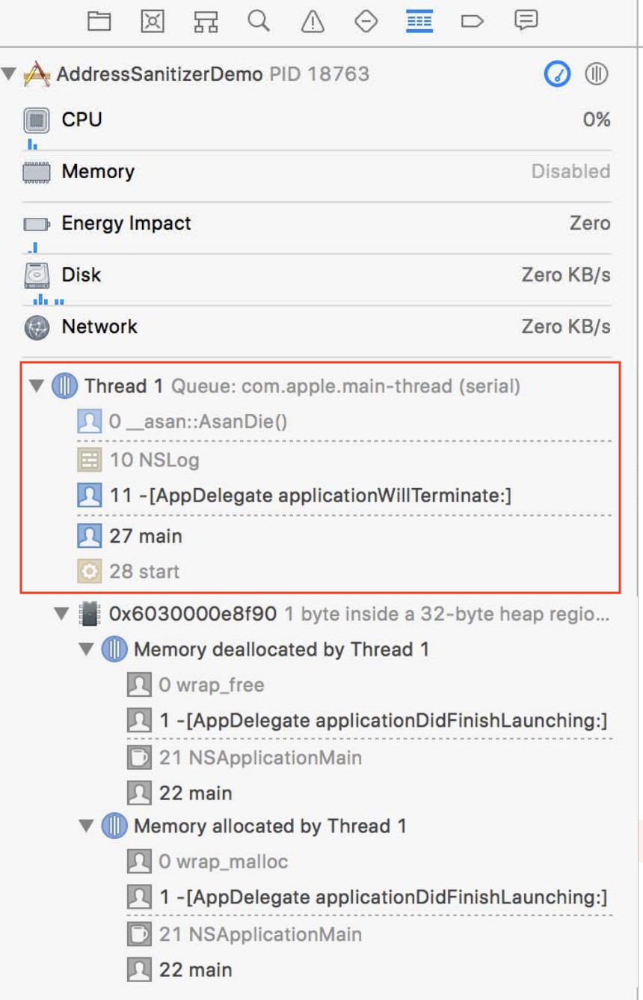
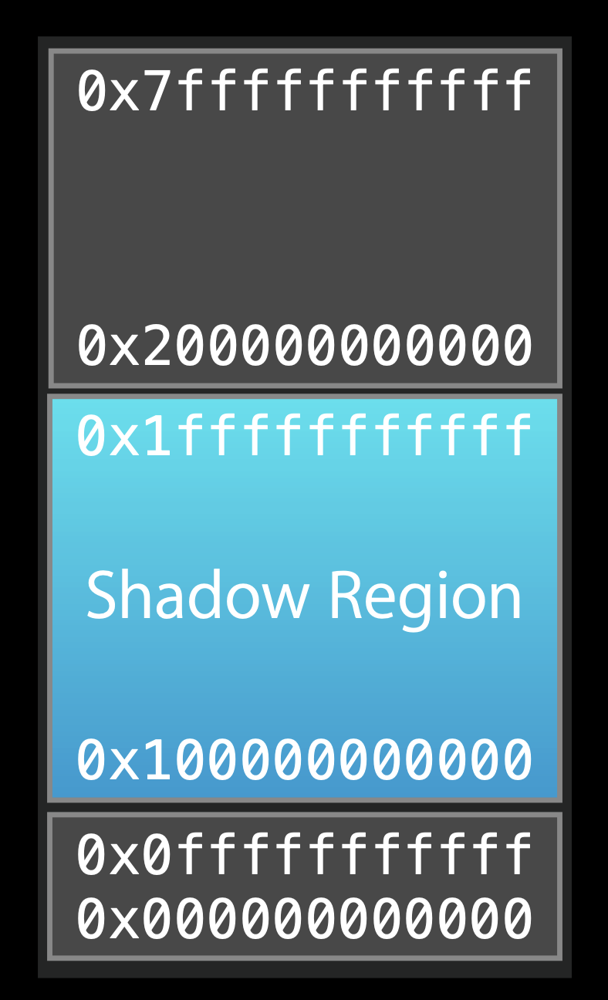

Memory corruption is hard to debug because it is hard to consistently reproduce and the source of error is often far from its manifestation. But with powful Address Sanitizer tool, we could achieve it. Addresss Sanitizer is a LLVM-based debug tool to finds memory corruption at run time with less overhead at running time. And it works on OS X, iOS (simulator and device).
Different kinds of memory corruption
- use after free
- heap buffer overflow
- Stack buffer overflow
- global variable overflow
- overflows in C++ containers
- Use after return
- Use after scope
How to enable Address Sanitizer
Edit Scheme
turn on the
Address Sanitizer
re-compile the App
This can be used together with Malloc Scribble.
Xcode Debuger UI
showing errors

stacktrace
memory allocation

Heap object
- faulty addresss
Expand Memory View. It shows the allocation and deallocation backtrace of the memory. Also we can see the bytes of the object in the memory
- the black bytes : valid memory
- the grey bytes: invalid memory

We can also see the bytes of the memory by view Memory of xxx

Besides, in the LLDB, we can run memory history to get the backtrace of the allocation and deallocation.

Use Cases
Heap buffer overflow

case from here https://www.youtube.com/watch?v=rJFoMq-RI7c
Use out of scope stack memory

value is a variable that inside the if scope. If you assign its address to integer_pointer and access its memory outside the scope by using *integer_pointer , it triggers use of out of scope stack memory
Use stack memory after return

In the c function, return_address_of_stack it return &a, the address of a variable. While a is a stack variable in this function, the function returns, the stack frame will be released. At. that time, if we try to use a again, it triggers use of stack memory after return.
Use of deallocated memory

When to Use Address Sanitizer
- You project is mixed with C languages and Swift
- Memory corruptions and crashes, which are hard to reproduce and find out the root cause
- General debugging
Integrated with Test and CI
Because it is less overhead than other tools and detects bugs at the run time, we can integrate it with XCode test scheme and CI.
In Xcode
- Edit Scheme – Test – Diagnostics tab
- “Enable Address Sanitizer” checkbox
- Build and Test
Command Line
1 | $ xcodebuild -scheme "Jogr" test -enableAddressSanitizer YES |
Under the Hood
How Address Sanitizer works
When we enable the address sanitizer and compile a executable, Xcode pass a flag to Clang when compiling.
1 | -fsanitize=address |
After building, the instrumented executable will contain memory checks. Besides, at runtime, this binary links with Asan runtime dylib that contains more checks and the dylib is required by the instrumentation.
How this memory check works?
It will check the allocations in our process. In the following graph, the blue region is the memory we allocted. In the right side, it is the Shadow memory maintained by Address saninitzer , which tracks the real memory in the left side, telling whether the real memory is address-accessible or not. The Redzones are the poisoned memory.

If the executable is compiled by enabling the Address sanitizer, every time before it access to memory, there is prefix instruction to check if this memory ispoisoned. If it was, the Address Sanitizer will generate a diagnostics report shown above.

The following graph shows the process is trying to access to a poisoned memory and it trigger Crash and genrate a diagnostic report.

How the lookup table works
In address sanitizer, the loop up in the shadow memory should be very fast so that it will be less overhead. To achieve that, they main a look up table where every 8 bytes real memory in user process are tracked by 1 byte in the shadow memory. Even so, the loop up table is large. So they don’t allocate memory region for the lookup table. Instead, they reserve the memory region for shadow usage.
Supposed the address of the real memory usage in the process is Addr. The address of the related shadow memory is Add >> 3 + Offset. If the value in the bytes in the shadow memory isn’t 0, we know the real memory is poisoned.

The heap object allocation
The default Malloc implementation layout out objects in memory one after another for optimizing memory consumption. But address sanitizer replace default Malloc implementation by using it is own allocate implementation, which lays out objects further apart from each other.

All the unused memory between objects are marked as poisoned, marked as red in the shadow memory. Once a object is free, the related shadow memory is marked as red, poisoned too. Also, address sanitizer will delay reuse of free memory. So it can catch the heap buffer overflow, double-free errors, user-free etc.
Stack variables

When enabling the Address sanitizer and compiling the executable, some red zone will be inserted between two stack variables, so stack red zones are poisoned at the runtime.
Global variables

They do the similar things during the compiling time for the global variables,
Overhead
CPU slowdown usually between 2x–5x
- In normal case, CPU slowdown 2x-3x. In some edge case, they have seen the slowdown 5x.
Memory overhead 2x–3x
AddressSanitizer uses more real memory than a native run. Exact overhead depends on the allocations sizes. The smaller the allocations you make the bigger the overhead is.
AddressSanitizer uses more stack memory. We have seen up to 3x increase.
Still, this overhead is smaller than other tools that can do the same job.
The difference in Assembly code
Let’s write a simple Objective-c function, and build a executable.
1 | - (void)testAllocation |
The left side is the Assembly code for normal code; the right side is the Assembly code after enabling the Address Sanitizer.

The one with Address Sanitizer enabled adds checks. The following is the shadow memory check. If the value in w3 , the value from the shadow memory is zero. It goes the loc100004894 label, continue to run. But if not, it will call imp___stubs____asan_report_store8 to generate the Address sanitizer report.

scan qr code and share this article